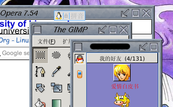
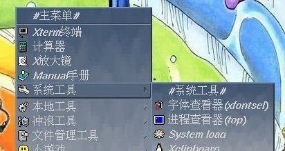

看着自己的 FVWM 环境也有蛮多不是很爽的地方，试着改进了一下。今天试用了 FVWM 主页上推荐的东东，搞好了俺的窗口标题栏和关闭按钮，还有 menu 等，实在是太爽了。
 
今天又到何狸的 blog 去了，文章发表速度很快啊，想不通了，咋地她发表这么快呢，牢骚怎么这么多啊。很开心发现链接里多了我的 link。可是不开心的事情也有啊~
写了人家的名字还要放上不恰当的形容词，强烈抗议~!
主页地址又改了，现在为 http://free.6to23.com/lalawuer, 没有像虎翼那样的强行广告，间接更改页面的行为，而且访问速度奇快，也许是现在站点还未很出名的原因吧。反正得一时就用一时吧，不管了……
BTW，自从学校断了 bt 和网游的网络端口之后，现在上网速度发了彪。以前 ping 都 ping 不到的 pop.mail.yahoo.com.cn 可以访问了，又可以用 fetchmail 收取我的 vc_upset AT yahoo.com.cn 帐号了，这个帐号以前只能在家里的 ADSL 上访问的。毕竟 yahoo 的服务质量有名的~
一直想不通，他们是怎么走到一起的，然后又为什么那么快地分开。这场在我看来是比梦境还要还要离奇的恋爱，不是它的过程，而是它的开始和结束。他的QQ签名无声地传播着这个消息，以为要送上安慰的我反而被他安慰……我彻底无言了~
iPod 真的很好吗？怎么最近周围的朋友那么多已经买了，或者准备要买 iPod 的都是那么……iPod is a mp3, and just a mp3。想起以前我买的 CD 机，买了被偷，接着又买，听的时间又有多少呢？虽然一直不想承认为此而后悔，但这样子也太不明智了。
最近又到何狸的 blog 去了，内容很丰富啊，生活总是那么精彩。看看自己这里，相比之下就寒酸了，哈。想起自己也 blogging 过的，但最后发现其实一直在记很无聊的流水帐，缺乏诗意啦。可这里的生活不是流水帐，又是什么呢？
其实工大也蛮有历史的，从工大自己的女生节就可以看出来。这几天各个学院都在举行各种让女生参与的活动，占据工大绝对主力的男生成了完完全全的陪衬……
BTW，最近也遇到了很有意思的事情，有关 mm 们对事情的反映：
Lalawu：真是流年不利啊，课表上写第 8 周上的课，第 3 周就得上了，又没人通知我们寝室……挂科了想好好学习都不行……
L.c：活该！
Guo：呵呵 活该:>
Lalawu：……
~~~心理终于呼了一口气，67.5，不管考得怎么样，终于过了。想起上个学期挂了这么多门，四级也算是小小的安慰。
我们班的情况大概是 20 多个人，过了一半吧，六级的情况好些，除了个别，其他的都过了。听说四六级要改革，我们可能算是最后一届了，不知道改革后的六级会怎样。拿毕业证要紧……